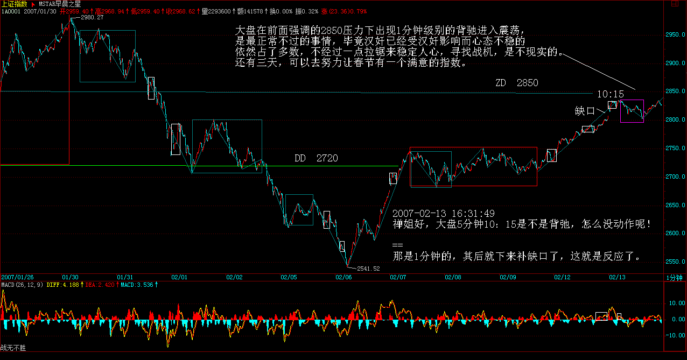
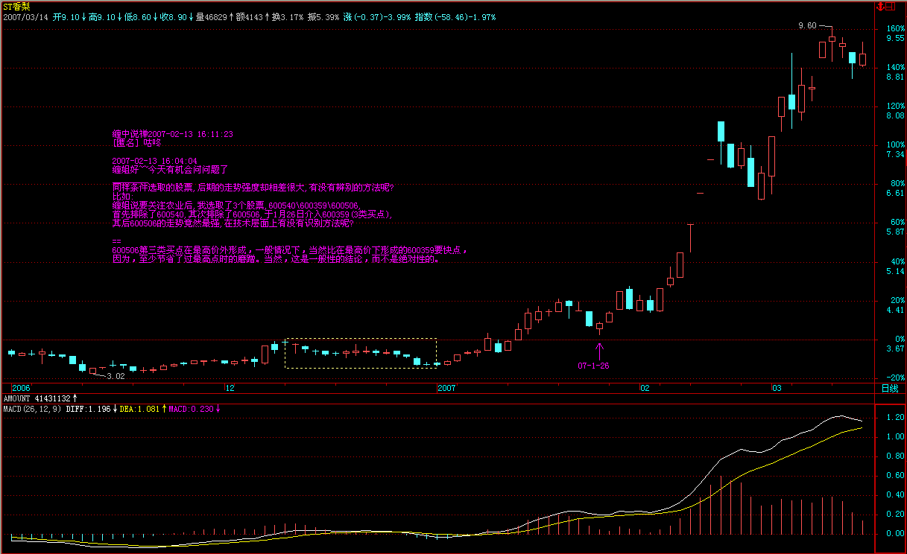
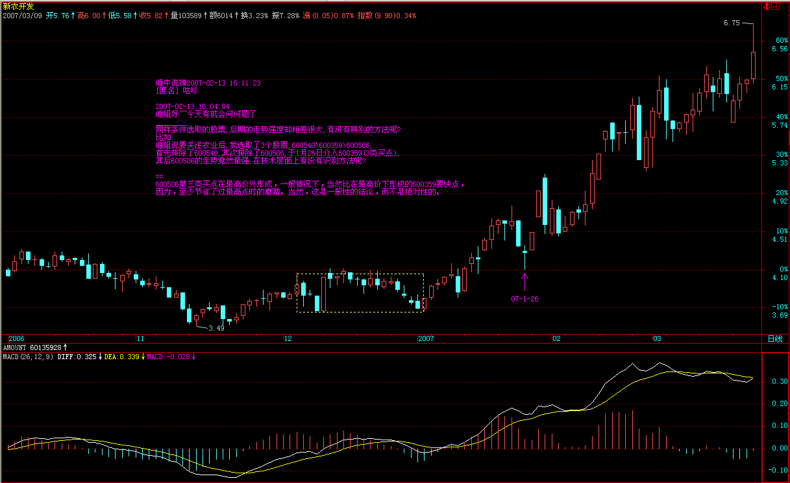
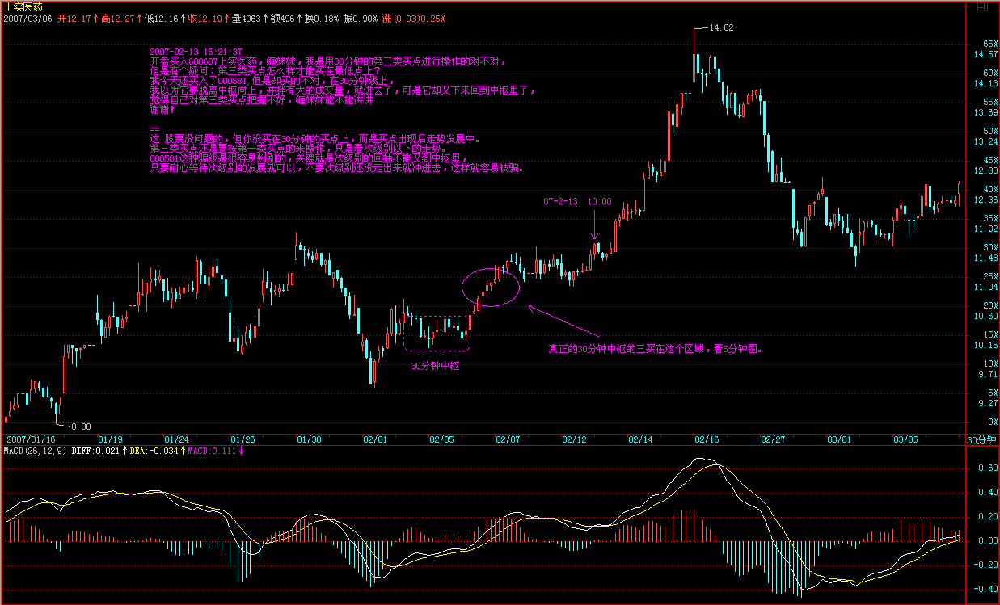
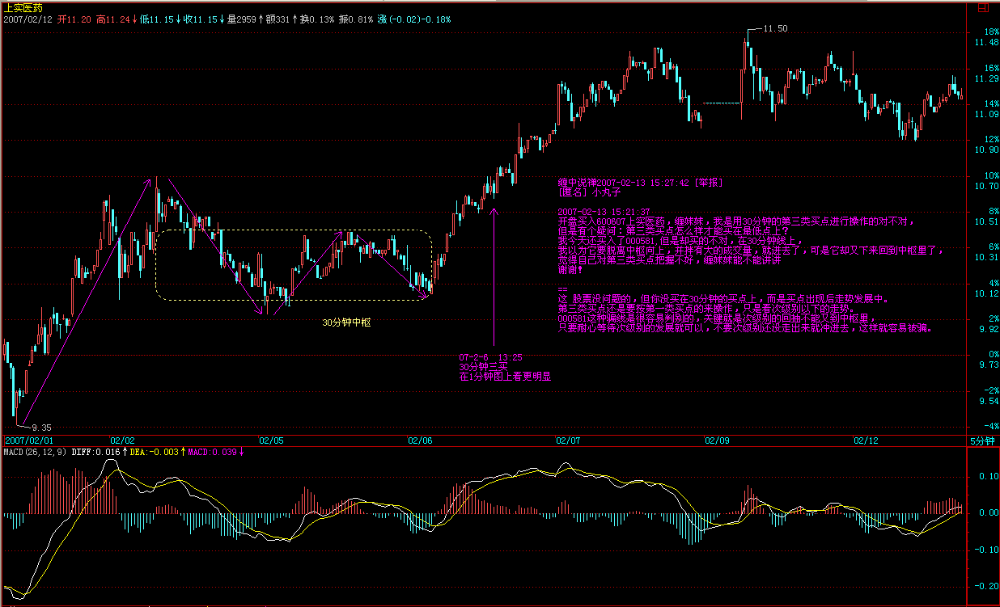
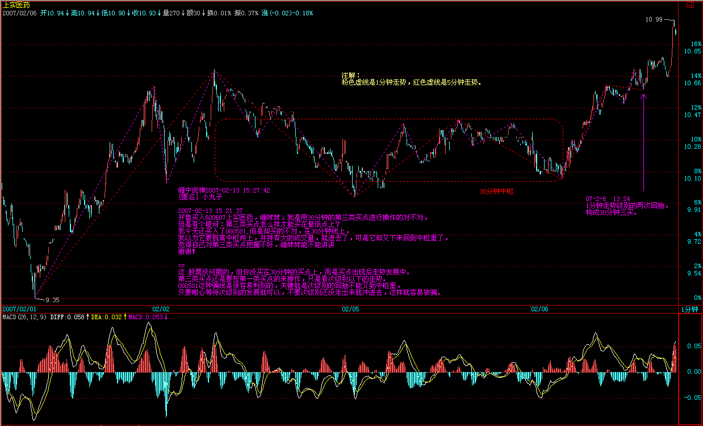
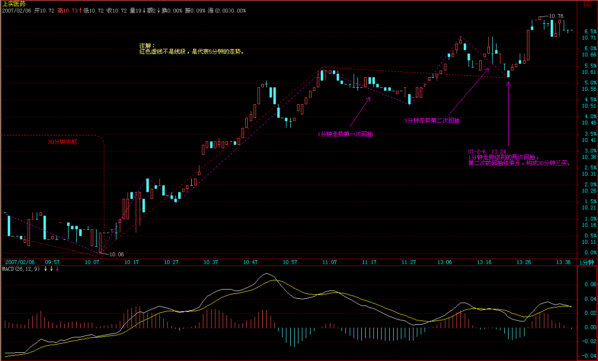
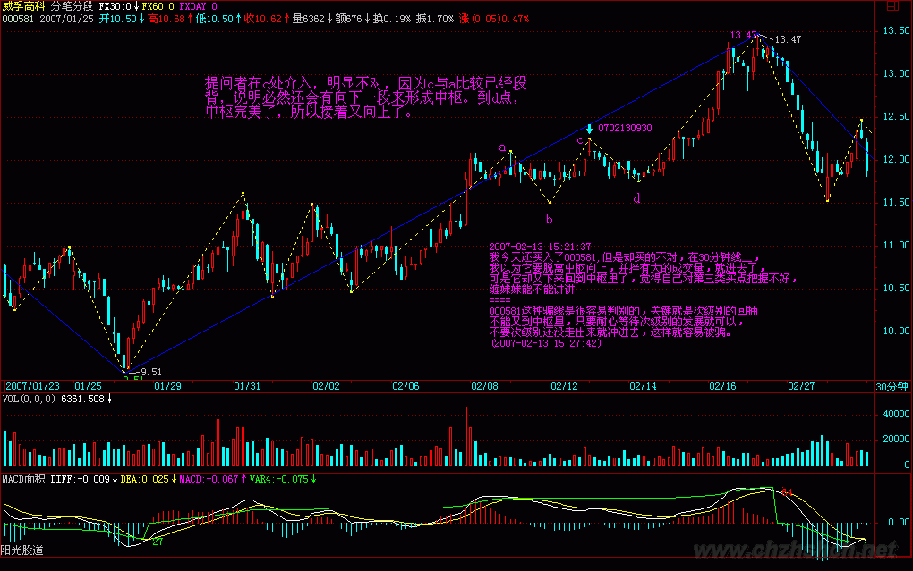

|
 |
教你炒股票30：缠中说禅理论的绝对性
(2007-02-13
15:07:02)
市场价格是否完全反映所有信息，可以随意假定，无论何种假定，都和实际的交易关系不大。交易中，你唯一需要明确的，就是无论市场价格是否完全反映信息，你都必须以市场的价格交易，而你的交易将构成市场的价格，对于交易来说，除了价格，一无所有（成交量可以看成是在一个最低的时间段内按该价格重复成交了成交数量个交易单位）。这一切，和市场价格是否反映所有信息毫无关系，因为所有价格都是当下的，如果当下的信息没被市场反映，那他就是没被市场当下反映的信息，至于会不会被另一个时间的价格反映是另外的事情。站在纯交易的角度，价格只有当下，当下只有价格，除了价格与依据时间延伸出来的走势，市场的任何其他东西都是可以忽略不计的。
价格也和人是否理智无关，无论你是否理智，都以价格交易，而交易也被价格，这是无论任何理论都必须接受的事实：交易，只反映为价格，以某种价格某个时间的交易，这就是交易的全部。至于交易后面的任何因数，如果假定其中一种或几种决定了交易的价格，无论这种因数是基本面、心理面、技术面、政治面还是什么，都是典型的上帝式思维，都是无聊勾当。其实，对于价格来说，时间并不需要特别指出，因为价格轨迹中的前后，就意味着时间的因数，也就是说，交易是可以按时间排序的，这就是交易另一个最大的特征：交易是有时间性的，而这时间，不可逆。在物理还在探讨时间是否可逆时，对于交易空间的探讨，这最困难的时间问题，就已经有了最不可动摇的答案。而本ID的理论，当然也是以这交易时间的不可逆为前提，如果今天的交易可以变成昨天的或者干脆不算了，那本ID的理论马上土崩瓦解。
交易，当然是有规律的，而且这规律是万古不变的，归纳上述就是：交易以时间的不可逆为前提完全等价地反映在价格轨迹上。当然，这万古不变也有其可变之处，例如交易突然因为某种原因可以随便更改，因此，在逻辑上更严谨的说法就是，把满足该条规律的市场称为价格充分有效市场，本ID的理论，就是针对这种价格充分有效市场的，而这种市场，至少对应了目前世界上所有正式的交易市场。那么，非价格充分有效市场是否存在？当然有。例如，你昨天一亿元钱买了一石头，今天卖石头的黑帮老大拿着枪顶着你说昨天的交易不算了，钱不给了，石头也收走了，这种存在类似交易的市场当然不可能是价格充分有效的。
以前所有市场理论的误区都在于去探讨决定价格的交易后面的因数，交易是人类的行为，没什么可探讨的，人类就像疯子一样，其行为即使可探讨，在交易层面也变得没什么可探讨的。所有企图解释交易动机、行为的理论都是没有交易价值的，不管人类的交易有什么理由，只要交易就产生价格，就有价格的轨迹，这就足够了。站在纯交易的角度，唯一值得数学化探讨的就是这轨迹，其他的研究都是误区，对交易毫无意义。
那么，价格是随机的吗？这又是一个上帝式的臆测。决定论和随机论，其背后的基础都是一个永恒因数论，一个永恒模式论，也就是，价格行为被某种神秘的理论所永恒模式化。无论这种模式是决定还是随机，这种假设的荒谬性是一样。交易，只来自现实，因此，价格是被现实的交易所决定的，相应，上面的顾虑就可以扩充为：交易是现实的行为，交易以时间的不可逆为前提完全等价地反映在价格轨迹上。
交易的现实性是交易唯一可以依赖的基础，那么交易的现实性反映了什么，有什么可能的现实推论？首先，人的反应是需要时间的，就算是脑神经的传输，也是需要时间的；其次，社会结构的现实多层性以及个体的差异性决定了，任何的群体性交易都不具有同时性，也就是说，即使是相同原因造成的相同买卖，都不可能同时出现，必然有先后，也就是说，交易具有延异性，不会完全地趋同，这是交易能形成可分析走势的现实基础。
由于交易具有延异性，没有绝对的同一性，那么即使对于严格一种因数决定交易行为的系统，也依然能产生可分析的价格轨迹。任何群体性的交易行为，不会出现完全的价格同一性，也就是说，不会永远出现所有人同一时刻的同一交易。而一个完全绝对趋同交易，就等价于一个赌博，所有的买卖和买大小没任何区别，这样的系统是否存在？当然，例如一个庄家百分百把所有股票都吃了，而且任何一笔的交易都只有他一个人参与，没有任何别的人参与，这时候，其走势等价于一个买大小的赌博。而只要有人买入或还持有这股票的1股，那么这个交易就可以用本ID的理论来描述，因为，一个不完全绝对趋同的交易就产生了，本ID理论的另一个界限就在此。
本ID的理论只有这两个界限，只要是价格充分有效市场里的非完全绝对趋同交易，那本ID的理论就永远绝对有效，这种绝对性就如同压缩影射不动点的唯一性对完备的距离空间一样。至于有多少人学习，应用这个理论，对理论本身并没有任何实质的影响，因为，即使所有人都应用本ID的理论，由于社会结构以及个体差异，依然不会造成一个完全绝对趋同交易，这样，本ID的理论依然有效。而更重要的是，本ID的理论，并不是一个僵化的操作，都是永远建立在当下之上的。例如，一个日线级别被判断进入背弛段，由于某种当下的绝对突发事件，例如突然有人无意按错键又给日本捎去一千几百颗原子弹，使得小级别产生突发性结构破裂最终影响到大级别的结构，这时候，整个的判断，就建立在一个新的走势基础上了，而往往这时，实际的交易并没有发生，除非你运气忒好，你刚按买入，那原子弹就飞起来了。一般人，总习惯于一种目的性思维，往往忽视了走势是当下构成中的，而本ID的理论判断，同样是建筑在当下构成的判断中，这是本ID理论又一个关键的特征。关于这种理论的当下性，在以后的课程中会重点介绍，按学历，这是初中的课程。
而本ID的理论，最终比的是人本身，就像乾坤大挪移的第八重肯定打不过第九重的，但任何非乾坤大挪移的，肯定打不过第八重一样，有一种武功是高出其它孤峰而上的，因为起点已经大大超越了，其他那些起点就错了，又怎么能比？显然，不可能所有人都相信应用本ID的理论，因此，那些不用本理论的人，就成了本ID理论吸血的对象，现实中，这种对象不是太少，而是太多了。其次，如果有庄家、基金偷学了这种方法，这就等于乾坤大挪移比第几重了，而且对于大资金来说，至少要比散户高出两重，才可能和散户打个平手，因为资金大，没有更高的功力，怎么能挪移起来？更重要的是，级别越大，企图控制干扰所需要的能量越大，对于周线级别以后，基本就没人能完全控制了，如果真是出现个个庄家、基金争学本ID理论的情况，那么除了在小级别比功力外，功力浅的完全可以把操作级别提高来加强安全性。更重要的是，应用相同的理论，在现实中也不会有相同的结果，现实就是一个典型的非完全绝对趋同系统，就像同样的核理论，并不会导致德国和美国同时造出原子弹，同样的理论，在不同的资金规模、资金管理水平，选股策略、基本面把握、交易者性格、气质等情况下，自然地呈现不同的面貌，这就保证了同一理论交易的非完全绝对趋同。
对本ID的理论有一点是必须明确的，就是本ID的理论是对价格充分有效市场非完全绝对趋同交易的一个完全的数学公理化理论，唯一需要监控的就是价格充分有效市场与非完全绝对趋同交易这两个前提是否还存在，更重要的是，这归根结底是一套关系人的理论，只能不断在交易中修炼，最后比的可是功力。例如，就算是背驰这么简单的事情，就算是同一种方法，当成为群体性行为时，比的就是心态与功力，心态不好、出手早或出手迟的，就会在价格上留下痕迹，甚至当趋同性较强时，会使得级别的延伸不断出现，那就让功力深的人得到一个更好的买入或卖出价格，这些细微的差别积累下来，足以使得赢利水平天差地别。这也是为什么本ID可以把理论公开的一个深层原因，因为本ID的理论是对价格充分有效市场非完全绝对趋同交易的一个客观理论，即使公开了，也不会让这理论有任何改变，就像牛顿力学不会让万有引力改变一样，美国的原子弹爆炸了不会影响中国的原子弹按照同样的理论出现一样。至于理论可能造成的趋同交易加大，也早在本ID理论的计算中，这里比的是当下的功力。
无论你用什么交易方法，只要是在价格充分有效市场非完全绝对趋同交易里，你就在本ID理论的计算中；而要在本ID的理论里功力日增，就首先要成为一个顶天立地的人，这也是本ID让各位多看本ID所解释论语的原因。交易，不过是人类行为的一种，要成为成功的交易者，首先要对人类的行为穷其源，得其智慧，否则，一个糊涂蛋，什么理论都是白搭。本ID理论的基础部分，只是把现实的真相解剖出来，但这远远不够，看明白与行得通，那是两回事情。当然，看都看不明白，是不可能真的行得通的。而行，就是修行，“见、闻、学、行”，缺一不可。本ID的理论如同大道，不需要私藏着，都可以学、都可以行，但能否行到不退转的位置，是否最终还是“学如不及，犹恐失之”，那就要靠每个人自身的修行了。
理论，只是把现实解剖，但真正的功力，都在当下，不光要用理论的眼睛看清楚现实，更要逐步让自己和走势合一。而行的初步功力是什么？归根结底就是“恰好”，这个“恰好”是动态的，无论多少人，每个人的行为当成一个向量，所有人的行为最终构成走势的向量，而所谓的“恰好”，就是这个总向量本身。而如何才能永远和这总向量一致？就要首先把自己变成一个零向量，有也只有当一个零向量加入到任何一个向量叠加系统里，才不会影响到最终的总向量的。把自己的贪婪与恐惧去掉，让市场的走势如同自己的呼吸一般，看走势如同看自己的呼吸，慢慢就可以下单如有神了，你的交易，就是顺着市场的总向量的方向增加其力度而已，这才是真正的顺势而为。只有这样，才算初步入门，才能逐步摆脱被走势所转的可悲境地，才能让自己和走势合一，和那永远变动的总向量一致而行。至于走势分析的学习，只不过是门外的热身而已。
有人可能要追问，如果所有人都变成零向量，那又如何？交易市场存在的基础，就是人的贪婪与恐惧，如果所有参与交易市场的人都没有贪婪与恐惧，那市场就没了，资本主义就没了，货币就被消灭了，那时候，本ID的理论自然就不存在了。只有对这个以人的贪婪、恐惧为基础的市场进行“不相”之，才能长期有效地吸取这市场的血。本ID理论的基础部分，在人类历史上第一次把交易市场建筑在严密的公理化体系上，就是要把市场的本来面目还原，让人的贪婪、恐惧无所遁形，只有明确地知道市场当下的行为，才可能逐步化解贪婪与恐惧，把交易行为建筑在一个坚实的现实基础上，而不是贪婪、恐惧所引发的臆测上。只有智慧才可以战胜贪婪、恐惧，而当所有的贪婪与恐惧被战胜后，贪婪与恐惧所物化的资本主义社会本身，也就丧钟敲响了。
每日解盘（2007-02-13 15:09:43 )
缠中说禅：2007-02-13 15:09:43
大盘在前面强调的2850压力下出现1分钟级别的背驰进入震荡，是最正常不过的事情，毕竟汉奸已经受汉奸影响而心态不稳的依然占了多数，不经过一点拉锯来稳定人心，寻找战机，是不现实的。还有三天，可以去努力让春节有一个满意的指数。

今天深交所继续发扬狗拿耗子的精神，确实让一些计划受到影响，今天的个股没什么可说的。说句题外话，今天开始，有关创投的概念会逐步升温，这可是真正的朝阳产业
每日解盘（2007-02-14 15:13:25 )
缠中说禅：2007-02-14 15:13:25
让大盘春节有一个好收盘的活动继续，明天，汉奸会大力反扑的，因此明天能否扛住，就是整个活动能否胜利的关键。说过的股票，大多数都创新高了，联通按本ID与各位的约定，基本也快到5元了，不过这玩意真费钱，，今天只好对某只股票狠下杀手，兑现点钱出来花花，否则差点扛不住。今晚真想和里面长驻的老朋友好好谈谈心，别当山大王，暗地里还帮汉奸，都些什么烂人啊！
不说了，看明天吧，血战，快意恩仇！
缠中说禅：2007-02-13 15:14:57
[匿名] 小鸟 2007-02-13 15:12:38
妹妹你好！我觉得自己现在的操作基本上都是成功的，但有一点把握得不好，中枢完成后继续上涨的一段，大概会涨到什么幅度？虽然妹妹说过走得晚不如走得早，但我总是紧张过度，看着点苗头就跑了请问是不是中枢的前后两段大致对称？就好像一只蝴蝶，中枢是身体，前后两段就像翅膀。多谢！
--
第一个中枢后上扬的一段，如果不出现背驰段，那就会形成第二个中枢，如果这中枢的级别比第一个低，那这上涨就厉害了，所以不用急。具体、详细的，以后会说到。
补充一句，换句话说，任何能第一、二、三类买点完美出现的，基本比较厉害。
缠中说禅：2007-02-13 15:18:47
[匿名] 无言 2007-02-13 15:16:22
缠姐,有关创投的概念能不能说得明白一点,不必说个股,说说是什么形式的.谢谢!
==
风险投资、创业投资、VC
缠中说禅：2007-02-13 15:23:02
[匿名] 恒旧常新 2007-02-13 15:13:22
请问老师一个中枢的问题，一个头肩顶的中枢是从左肩开始还是从头部开始？
第二个问题：同向的1、2、3个中枢，中枢2与中枢1有重叠，中枢3与中枢2有重叠但不与中枢1重叠，这种情况的走势是否只是中枢1的扩搌？其中枢的区间就是中枢1的区间吗？祝福老师新年快乐！！！健康美丽！ ！ ！
==
其实没必要考虑什么头肩顶。中枢扩展有精确的数学定义，在一个中枢还延伸的时候，只有一个中枢，不存在中枢1、2的问题。
缠中说禅：2007-02-13 15:39:58
[匿名] 晕 2007-02-13 15:31:58
缠师我还有一个细微的问题：在最低级别上(比如1分钟)，三根重叠K线是否要求连续？此时好像和高级别的A/C段不一样，它们不存在中枢的方向问题，哪些是Z走势段呢？
==
当然是连续三根，一样有方向，例如从高位下来形成的，方向就是下上下，其实，一般不用看1分钟图当最低的，看分时图更清楚，
----------------
1. 方向就是看这根K线是红还是绿，对吧？
2. 万一1分钟图是来回大范围上窜下跳，那又没有可能不形成中枢呢？（因为要求是连续三根）
==
你个红绿没什么关系，因为红绿只反映收盘的情况，1分钟里怎么走没什么关系。如果价位是1分钟10元，下一分5元，然后又是7元，那是什么中枢都不会有，必须震荡稳定下来才有中枢。
缠中说禅：
2007-02-13 15:43:42
[匿名] 并不完美 2007-02-13 15:39:21
缠中说禅 2007-02-13 15:29:18
[匿名] 并不完美 2007-02-13 15:22:13
缠姑娘,我看大盘五分钟K线突破关于前面的2834.93点的后很可能就会成为一个5分钟的背驰,有关系吗?
==
你不需要预测什么，关键是走出来是什么就是什么。
===========
我的意思是,若是背驰,但按照走势终完美的原则,至少应该在2900以上,所以重点应该看那个时候,这种想法是否正确的?
==
这里和走势必完美无关了，目前的关键是否能形成第二个中枢的问题。而且，2900以上没有必然的理论保证，只是如果第二中枢在2850附近形成，那当然能上2900。问题是能否形成，这要走势本身说话，不需要预测。
缠中说禅：2007-02-13 15:57:45
[匿名] 晕 2007-02-13 15:26:41
关于第三类买点有点疑问， 请缠师解惑：
-------------
由定理一，可以得到第三类买卖点定理：一个次级别走势类型向上离开缠中说禅走势中枢，然后以一个次级别走势类型回试，其低点不跌破ZG，则构成第三类买点；
-------------
这里为什么是以不跌破ZG作为判断，而不是以跌破GG作为判断呢？
按前面分类，此回试虽然没跌破ZG，但跌破GG，那新中枢还是原中枢级别的扩展，而不是上涨中新生一个，这个也一样能参与吗？
==
关键是中枢，而不是围绕中枢的瞬间波动。买点都是在跌的时候形成的，而不是回升以后再追高介入。如果第一买点没买，就等第二、三，就这么简单。
缠中说禅：2007-02-13 16:11:23
[匿名] 咕咚 2007-02-13 16:04:04
缠姐好~~今天有机会问问题了
________
同样条件选取的股票,后期的走势强度却相差很大,有没有辨别的方法呢?
比如:
缠姐说要关注农业后,我选取了3个股票,600540\600359\600506,首先排除了600540,其次排除了600506,于1月26日介入600359(3类买点),其后600506的走势竟然最强,在技术层面上有没有识别方法呢?
==
600506第三类买点在最高价外形成，一般情况下，当然比在最高价下形成的600359要快点，因为，至少节省了过最高点时的磨蹭。当然，这是一般性的结论，而不是绝对性的。


缠中说禅：2007-02-13 16:27:18
[匿名] 后知后觉 2007-02-13 16:13:47
禅主，上次的晋西车轴买在了买点和卖点之间，幸亏你指导，我在5分钟高点出了。今天下午14：20买了600001，请禅主指导！（因为刷屏太快，我提问了四次了），刚才没整理就把那些股票发上来了，对不起。不是要刷屏！
==
出了要找机会买回来，这股票中线问题不大的，卖了也无所谓了。600001中线也不错的。
关键是要明确操作的目的，如果是纯粹的练习，那么就选好一只股票反复操作，这样容易提高，而且慢慢培养感觉。
一般情况下，对于新手来说，选好一些基本面有支持的，股价离底部不元，大级别又出现买点的股票反复操作，这样的效率，比换来换去要高。当然，熟练以后就是另一回事情了。
缠中说禅：2007-02-13 16:38:47
[匿名] 小注 2007-02-13 16:31:49
禅姐好，大盘5分钟10。45(10:16)是不是背弛，怎么没动作呢！
==
那是1分钟的，其后就下来补缺口了，这就是反应了。
缠中说禅：2007-02-14 15:13:25
让大盘春节有一个好收盘的活动继续，明天，汉奸会大力反扑的，因此明天能否扛住，就是整个活动能否胜利的关键。说过的股票，大多数都创新高了，联通按本ID与各位的约定，基本也快到5元了，不过这玩意真费钱，，今天只好对某只股票狠下杀手，兑现点钱出来花花，否则差点扛不住。今晚真想和里面长驻的老朋友好好谈谈心，别当山大王，暗地里还帮汉奸，都些什么烂人啊！不说了，看明天吧，血战，快意恩仇！
缠中说禅：2007-02-14 15:19:08
大家注意啦
对本ID曾说的股票，一定要技术来，当然中线都没问题，但由于本ID的操作是一个大的盘子里，有时候要用钱，砸起来估计不是一般人能受得了的，不追高，一定没事，追高就痛苦一下吧，中线没事的。
而且，最好就是用本ID的理论自己去找吃，这才是最恰当的。
缠中说禅：
2007-02-14 15:22:42
[匿名] 淡定 2007-02-14 15:16:44
看出楼主今天搏杀的壮烈了，性情中的楼主真是可爱啊，为你喝彩！
==
也没什么，这种事情经历太多了。本ID可没硬亢的习惯，打不赢就跑，找机会再来，这才是阻击的要点。
缠中说禅：2007-02-14 15:42:58
[匿名] 青青子衿 2007-02-14 15:37:01
联通里住有大BOSS,看来缠妹妹需要助拳啊!
==里面的人是老熟人，他们的底细，本ID简直太清楚了，挑逗一下而已，没事的，本ID可不需要什么助拳。
缠中说禅：2007-02-14 15:45:40
[匿名] 禅迷 2007-02-14 15:40:10
禅姐好，各位师兄好：
000909这两天成交量巨大，看5分钟线是否已经背驰，还可以追吗？
==
追，会有买点吗？先养成好习惯，投资是一生的游戏，不能一开始就给消灭了。
缠中说禅：2007-02-14 15:49:45
[匿名] 阿甘 2007-02-14 15:27:53
老大,你砸起999来,连1分钟的中枢都不留的,够狠,我喜欢.祝你情人节快乐.明天050就算汉奸怎么砸我也不出来了.
==
千万不用给本ID面子，一切按技术来。
缠中说禅：2007-02-14 15:55:42
[匿名] tw8882007-02-14 15:46:10
请问为什么不抛416,而抛999?杀跌可不好!
==
416一拉起来就出，不就回去了，现在，明天万一紧急，抛起来也简单。999今天本来就需要调整，本ID只是把这次在10元下买的兑现了，成本还在0下面，而且本ID不喜欢拿着太多去停牌，这是一个大的资金管理问题了。
其实各位看本ID这十几个股票构成的盘子每天的运动，就会学到资金管理了，现在本ID的大多数都在高位，只要有资金压力，兑现都很简单，本ID保证的是整个大组合的安全，而不是单个个股。
所以，对于小资金来说，全跟本ID的股票并不是效率最高的，应该按本ID的理论去自己找吃。
缠中说禅：2007-02-14 15:58:23
[匿名] 老虎 2007-02-14 15:55:28
谢谢！不过看不出你在联通上有什么风险，我的专业就是通信这行。联通的分拆以及3G的前景不会有什么问题。还是那句话基本面选股 缠妹理论做指导 无敌！那缠妹就更不在话下了，大家替你担心就多于了。。。。
==
中线肯定没问题，只是本ID希望春节前攻击上5元，因为前几天公布阻击时已经承诺了，本ID担心的是这个，而不是中线。不过只是只有两天时间了，本ID不会硬来的。
[匿名] 小丸子 2007-02-13 15:21:37
开盘买入600607上实医药，缠妹妹，我是用30分钟的第三类买点进行操作的对不对，但是有个疑问：第三类买点怎么样才能买在最低点上？我今天还买入了000581,但是却买的不对，在30分钟线上，我以为它要脱离中枢向上，并拌有大的成交量，就进去了，可是它却又下来回到中枢里了，觉得自己对第三类买点把握不好，缠妹妹能不能讲讲，谢谢！




==
这 股票没问题的，但你没买在30分钟的买点上，而是买点出现后走势发展中。第三类买点还是要按第一类买点的来操作，只是看次级别以下的走势。
000581这种骗线是很容易判别的，关键就是次级别的回抽不能又到中枢里，只要耐心等待次级别的发展就可以，不要次级别还没走出来就冲进去，这样就容易被骗。


|
|
|